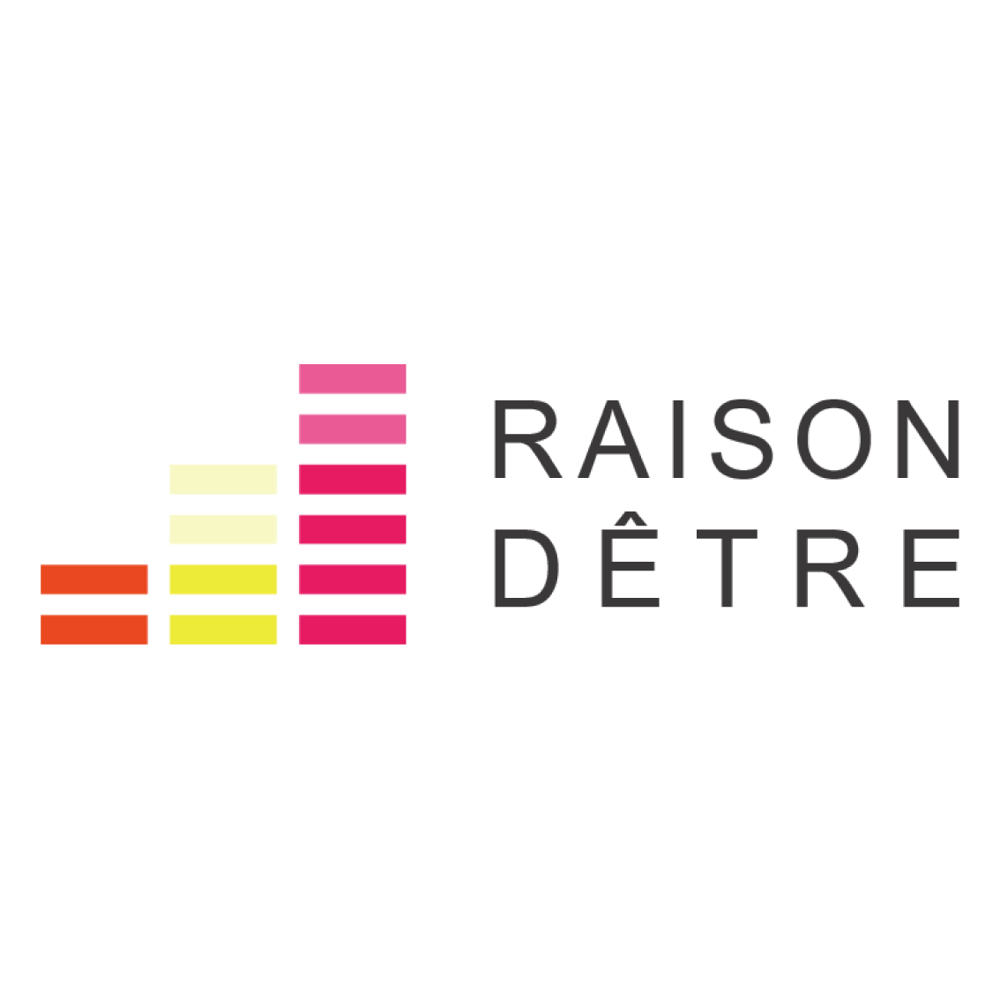

'24 楽曲展示
※当サイト上の楽曲データの無断転載、二次配布などはご遠慮ください。
作曲者の名前
←プロフィール画像 作曲者のプロフィールの説明がここに入ります。
レゾンデートル
Your browser does not support the audio element.
れぞんでーとる
Your browser does not support the audio element.
RAISONDÊTRE
Your browser does not support the audio element.